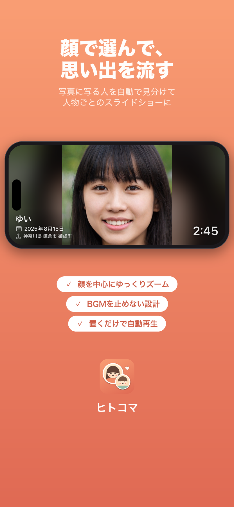
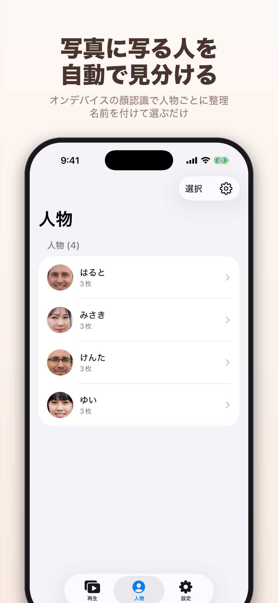
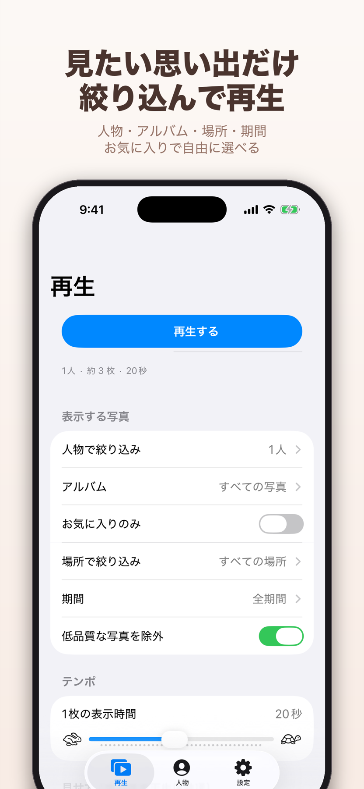

写真を人物ごとにまとめる
写真の顔を端末内で見分け、人物ごとに整理します。見つかった人に名前を付ければ、その人が写っている写真を選んで再生できます。認識が違う場合は、人物の移動や統合で手動修正できます。
ヒトコマは、写真に写っている人を選んで再生できる、iPhone・iPad用のスライドショーアプリです。顔認識で写真を人物ごとにまとめるので、子どもや家族など、見たい人の写真を選んで眺められます。
iPhone・iPad対応
iOS / iPadOS 18.0以降

写真の顔を端末内で見分け、人物ごとに整理します。見つかった人に名前を付ければ、その人が写っている写真を選んで再生できます。認識が違う場合は、人物の移動や統合で手動修正できます。
人物だけでなく、アルバム・撮影期間・場所・お気に入りも組み合わせて選べます。家族旅行の写真を期間や場所で絞るなど、見返したい写真に合わせて再生条件を設定します。
顔の位置に合わせたゆっくりしたズームと、写真の切り替えでスライドショーを再生します。撮影日や場所、人物名を写真に重ねて表示することもできます。


顔の検出と人物の分類は、すべてiPhone・iPadの中で完結します。写真、顔の特徴量、登録した人物名を、開発者や外部サーバーへ送信することはありません。
プライバシーポリシーを確認する →すべて端末内で処理
使っていないiPhoneやiPadをフォトフレームに。再生中は画面がスリープせず、タップすると操作できます。
子どもの成長、家族旅行、遠くに住む大切な人。名前を選ぶだけで、その人との時間を振り返れます。
ショートカットとCarPlay接続を使った自動再生に対応。音楽を止めず、同乗者と写真を楽しめます。
運転者は走行中に画面を見たり操作したりしないでください。直近の写真から人物のスキャンを始めます。処理は端末内で行われます。
見つかった人物に名前を付け、必要に応じて認識結果を手動で整えられます。
スキャン中でも再生できます。あとは置いたまま、思い出を眺めるだけです。
iPhone・iPadに対応しています。ダウンロードは無料で、アカウント登録は必要ありません。広告を非表示にする買い切りオプションもあります。
iPadOS 18.0以降のiPadに対応しています。見たい家族を人物から選び、充電スタンドなどに置いてスライドショーを再生できます。再生中は画面がスリープせず、写真を眺めるフォトフレームとして使えます。
人物、アルバム、撮影期間、場所、お気に入りを組み合わせて写真を絞れます。旅行した期間や場所を選び、家族の写真だけに絞るなど、見返したい思い出に合わせて再生条件を設定できます。
いいえ。写真、顔の特徴量、登録した人物名は端末内だけで処理・保存し、開発者や外部サーバーへは送信しません。
アプリ本体は無料です。アプリ内に広告が表示され、広告を非表示にする買い切りオプションも用意しています。
iOS 18.0以降のiPhoneと、iPadOS 18.0以降のiPadに対応しています。Android版はありません。
人物識別の精度には限界があります。人物画面から、名前の登録、別の人物への移動、同じ人物の統合などを手動で行えます。
写真の枚数や端末によって数分以上かかる場合があります。直近の写真から始め、スキャン中でもスライドショーを再生できます。
はい。ヒトコマのスライドショーは、ほかのアプリで再生している音楽を止めずに楽しめます。